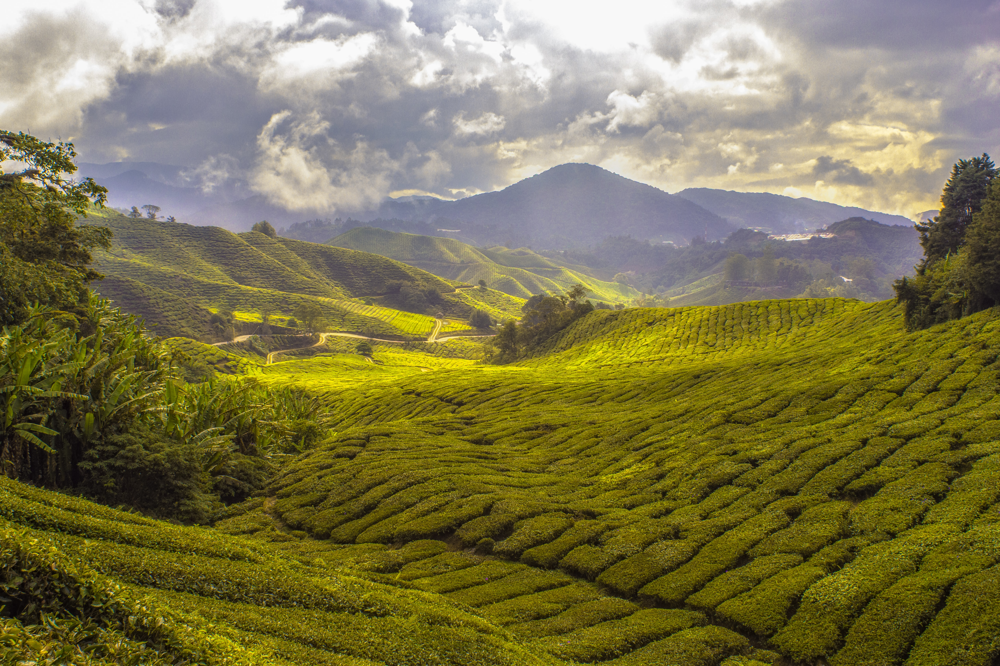
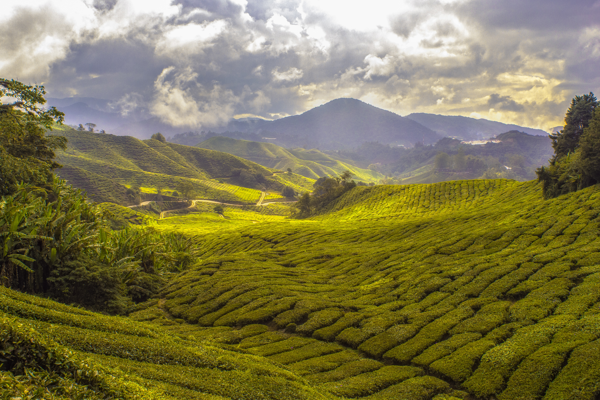

Our Promise
With health and convenience in mind, we strive for high quality, organic drinks while maintaining “OteaG (OTG - on the go)”. Quality and convenience can co-exist. OteaG uses whole, natural ingredients for all our products, including our boba. No concentrates or powders are used.
Quality starts from the soil. Soil without pesticides grow healthy plants. Our tea leaves are grown in our home province here in British Columbia. Only the young and juicy leaves are harvested. We cooperate with local farms who share the same philosophy. Healthy cattle ensures quality milk. Together, perfect hand-crafted drinks are created.
 
